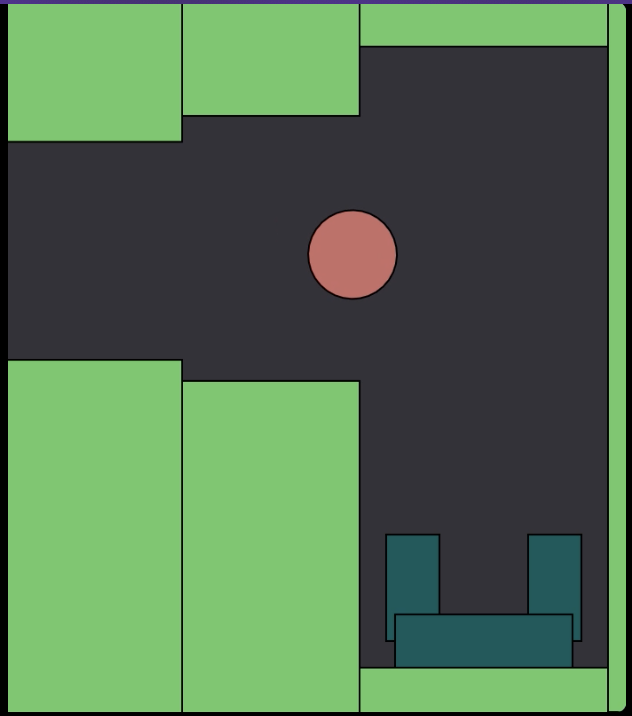
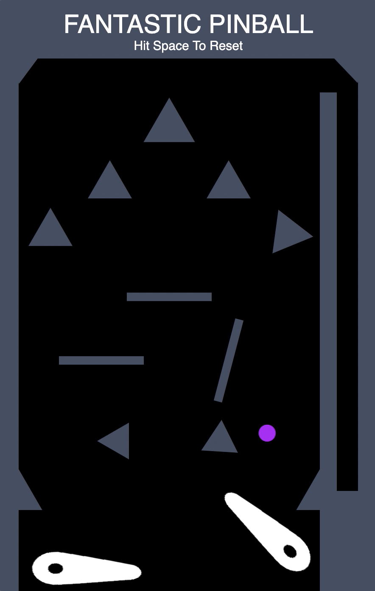

Throw Your Trash
Throw your trash is one of my earliest matter JS projects. This game had a simple objective: throw your trash, the ball, into a little "trash can". I have even went ahead and taught people how to recreate this game on my youtube channel which you can find either on the main page or in the social media part of this site.
Pinball
After learning about some more key parts of matter JS, such as constraints, I created my own pinball game which plays out nearly the same as any other pinball, with a few glaring differences. My version has no score board so the goal is to simply try to keep playing as long as possible without failing. Though it may not be my greatest project, I am incredibly proud of it as it was a key stepping stone in my game developer journey.
